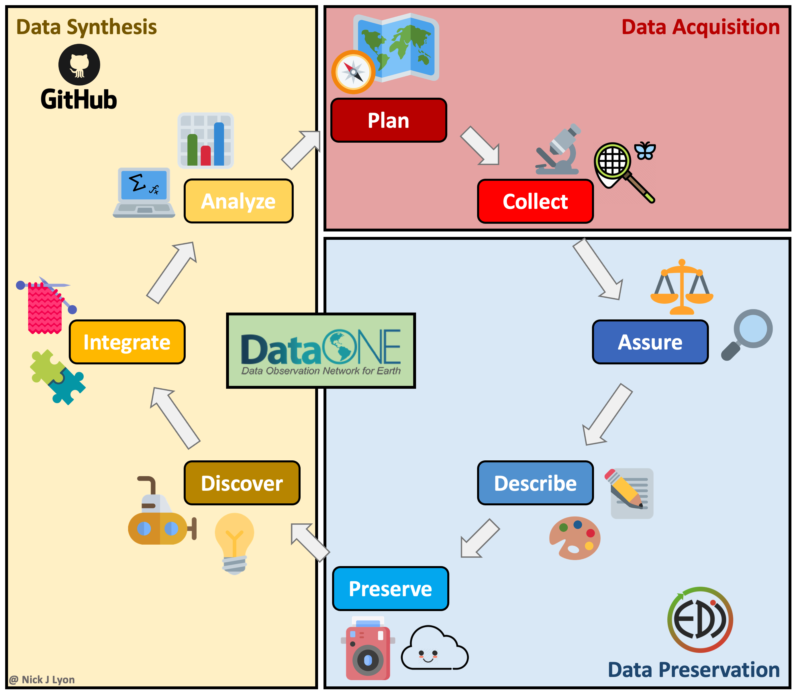
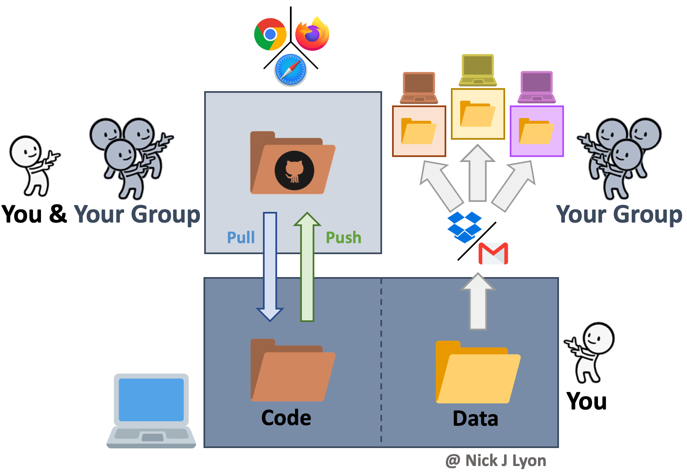

Workflows
Module Learning Objectives
By the end of this module, you will be able to:
- Describe various coding workflows
- Paraphrase how version control workflows facilitate collaboration on code products
Workflow Options
If you are working on any file that is the product of iterative edits, you have had to develop a workflow to approach that task. This could be a scientific paper, analytic code, or a presentation. There are many possible ways you could approach this task leveraging any number of software and hardware options but before we get into our discussion today about collaborative research using GitHub we would like to–briefly–outline some of the typical forms these workflows can take and how they fit into a broader framework of individual and synthesis science.
Individual Workflow
At its simplest, you could be storing your data and code on your local machine and doing the entirety of your work alone. When working on your code you would iteratively edit and save the same code file and you would have a static folder (or folders) for data that you added to as you collected and entered or downloaded additional data.
There are variants of this where you may be archiving everything on your hard drive (e.g., Time Machine on Mac OS, etc.) and you may be using a “save as” feature to preserve some iterations of your code. You may also perform this same operation within a cloud-based storage system (e.g., Box, Dropbox, Google Drive, etc.) so that some versions of both code and data are preserved based on time stamps.
This approach has the advantage of relatively few moving parts but such editing of your code loses all previous versions that aren’t explicitly preserved (as well as a record of the changes).
Another limitation of this approach is that to work collaboratively, everything would need to be manually shared with your collaborator(s) which introduces a significant risk that someone in the research team would accidentally use the “wrong” version of either the code or the data.

Data Lifecycle Considerations
The above approach works when doing largely individual research, but what about at other stages in the typical lifecycle of data? Said lifecycle is displayed below where data is acquired via planning and collection, data are assessed and preserved, and finally, data are synthesized and used to inform future plans.
Individual workflows performed by a small research team can be well-served by the relatively bare-bones workflow illustrated above but such projects often emphasize data acquisition and preservation over synthesis and thus are not as limited by a need for real-time collaboration on coding scripts across a team. Individual projects certainly do data synthesis, they just by their nature have to emphasize data collection at least as much as the synthetic components of research.
However, for larger teams–especially those that span disciplinary boundaries or have ongoing data collection protocols (e.g., research coordination networks, working groups, etc.)–the synthesis part of the data lifecycle often becomes progressively more important. This importance is tightly linked to a need for collaboration among team members on wrangling, analysis, and visualization scripts that in individual workflows can be managed by a single team member but cannot be in synthesis projects.
Collaboration on coding can be accomplished by manually sharing code and data among group members but there are programs and websites that are specifically dedicated to meeting the need for collaboration. One example is “version control” systems (e.g., GitHub, SVN, etc.) that provide a framework for reproducible group work.

Synthesis Workflow
Version control systems preserve the iterative changes you and your team make to code and allow for informative titles and messages to be attached to these snapshots. This offers a clear advantage over ambiguous time-stamped versions preserved by cloud storage systems as it facilitates re-visiting code long after or by new team members who were not present for the initial writing. This approach is what we will be covering in greater depth in a few moments but the broad strokes are that you would preserve the history of your work and ensure that everyone uses the “right” version of the code.
However, despite its advantages for collaborative coding, version control is not meant for preserving data so you would need to share data with your collaborators either via email or by storing data in the cloud and sharing links with team members. Depending upon how you implement either route for sharing data (email vs. cloud) your group is still at risk for group members using different versions of the data–especially if your group is involved in ongoing data collection.
Further, an inconvenience associated with this workflow is that each group member will store their copy of the data in a different network of nested folders on their local machine. This means that all references in the code to the path of the data (e.g., “home/users/me/project/data/…”) will differ, so running a collaboratively-developed piece of code would require careful specification to avoid getting a ‘this folder does not exist’ error. This is absolutely surmountable but can be a source of frustration over longer project timelines.

Synthesis Workflow on NCEAS’ Server
Finally (for our purposes), you could build NCEAS’ server into your workflow to not only collaborate with colleagues on code but also centralize your data storage!
This method has all of the coding advantages of a workflow with version control (see above) in that it still facilitates reproducibility, transparency, and collaborative work. However, it also offers a secure location for all of your data to be stored that is accessible to all members on the same folder path.
This means that even though each group member could code separately in their own ‘home’ folder on the server (and send those changes back and forth with GitHub) all code could reference the same data location in the ‘shares’ folder on the server. This guarantees not only that all team members are using the same version of the data but that they are using the same exact data file.
Data can be moved from a specific computer onto the server by using any “File Transfer Protocol” (FTP) software (or “SSH FTP” a.k.a. SFTP). These programs function very much like the file manager on your computer (e.g., Finder on Mac) and allow simple dragging-and-dropping of files between your computer and the server. NCEAS has a tutorial on how to go about setting up an FTP or SFTP program on your computer that we are also happy to go over in greater depth as needed!
Adding the server to your team’s workflow also allows you to work on code both on your folder in the server and on your personal computer as needed. This means that using the server for some of your coding needs does not mean that you are limited to solely using the server ad infinitum thereafter.
An ancillary benefit of this approach is the dramatic improvement in computational power when using the server (as compared to even a fast personal computer)
Summary
While each approach offers its own strengths and weaknesses, in our experience many scientists avoid the latter two options due to knowledge barriers about how to get set up in these programs and websites, much less how to actually navigate those systems once set up!
Today, we will strive to cover the fundamentals of using a version control system in your workflow (Option 2) and–for some groups, depending on interest–how to extend that workflow further and leverage NCEAS’ server to share data and work on code.
Please don’t hesitate to ask questions and remember that this link is a resource that you should feel free to refer back to if you ever need a refresher or wish to teach peers! There are supplementary appendices as well which we do not anticipate being able to get to today but we do think are likely to be valuable to you as your confidence with these systems grows.